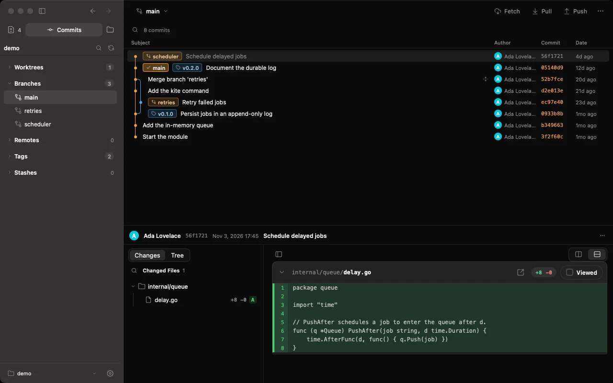
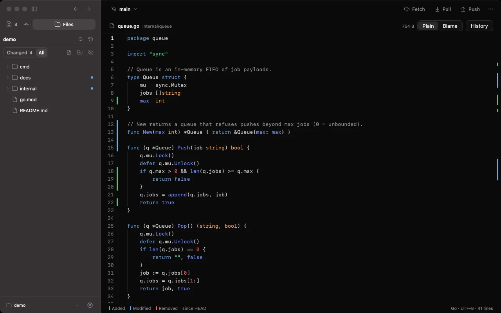

01Stage exactly what you mean
The Changes view lists what is staged and what is not, with the diff next to it. Stage or unstage a whole file, a hunk or single lines, discard what you do not want, then commit or amend. Rebase, merge, cherry-pick and revert states are shown and resolved in place; conflicts open as a three-way resolution.
02A history you can walk
The commit graph carries branch, tag and stash decorations, with the ref sidebar (branches, remotes, tags, stashes, worktrees, submodules) beside it. Open any commit as Diff or Tree to see just what changed, or the whole project as it stood. Fetch, pull (fast-forward, merge or rebase) and push; Push Multiple… sends several branches and tags at once, never forced.

03Read it like a code editor
Files is a read-first view of the working tree: a tree you can filter to Changed, M and U marks, change bars in the gutter, Plain | Blame and the file's own History. Images compare 2-up, swipe or onion skin. New, rename and delete are there when you need them.

04Small on purpose
Solco Git only runs git. It never force-pushes, never runs git clean, never fetches behind your back (Fetch and the optional auto-fetch interval are the only network calls), and keeps no credentials, commit messages or file contents in its settings or logs. There is no Clone, no pull-request or account integration, and no AI.
# the boundary is simple
Solco Git → a window onto repositories you already have
git → every read and every change
(nothing else: no accounts, no cloud, no telemetry)